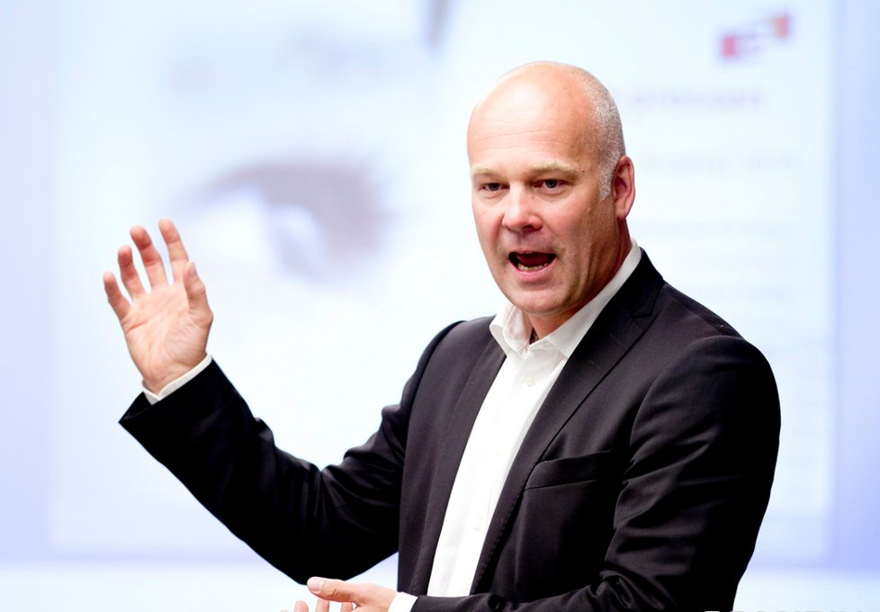

H.ØR.A
av Espen Dalløkken, Avdelingsmøte @NRKSuper, 2017
Fra og med nå, følger dere alle H.ØR.A!
Hensikt
Ønsket Resultat
Agenda
H.ØR.A
Ingen H.ØR.A? Da trenger du ikke møte opp.

"Ingen H.ØR.A?
Da skal du kreve en. Kommer den ikke, la være å møte opp!"
Lært av Bjørn Tennøe
Praktiser i mange år i blant annet:
FINN,
Statens Pensjonskasse,
ezmo
Fungerer j****g bra!
Møter blir litt mindre meningsløse når de som kaller inn må tenke:
Hvorfor skal vi møtes egentlig?
Hva skal vi oppnå?
Hva skal foregå og hvem skal bidra med noe?
Så Espen, gjelder dette alle møter?
A L L E
Ja, også "statusmøter"
som egentlig burde hete...
"oppdater-leder-med-ting-alle-andre-i-rommet-allerede-vet"-møter
"det-som-burde-vært-info-i-en-epost"-møter
Respekter dine kollegers tid, ha med H.ØR.A
Du vil da ha møter som alle føler er litt nyttig
Du blir faktisk et mer lykkelig og harmonisk menneske
ALLTID
Hensikt
ALLTID
Ønsket Resultat
ALLTID
Agenda
ALLTID
H.ØR.A